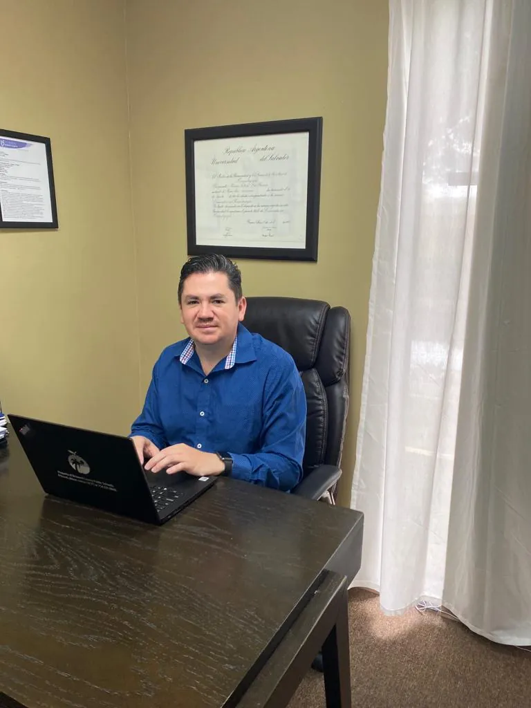
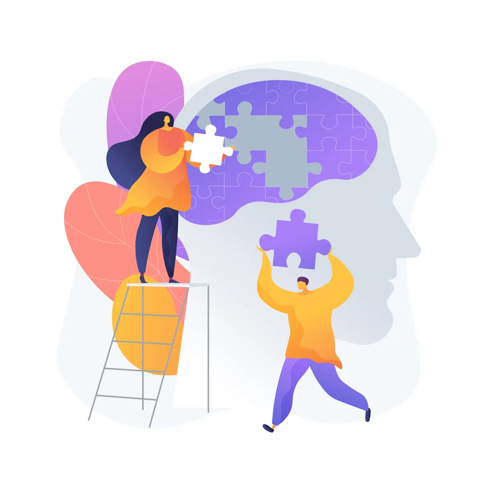
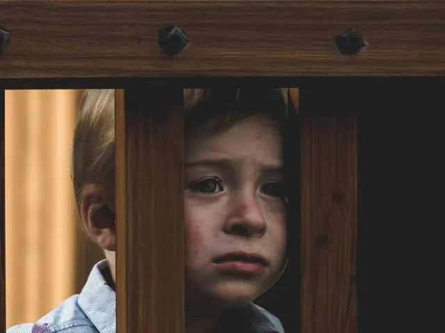
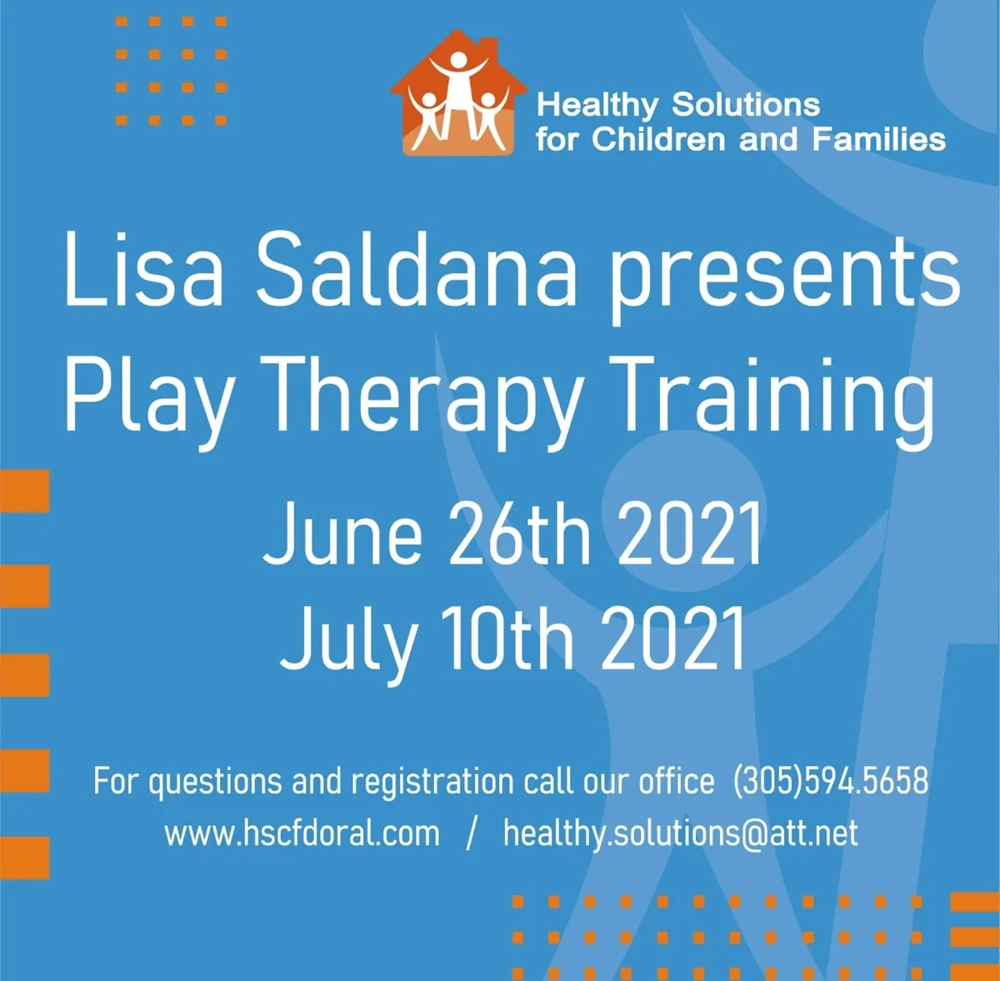
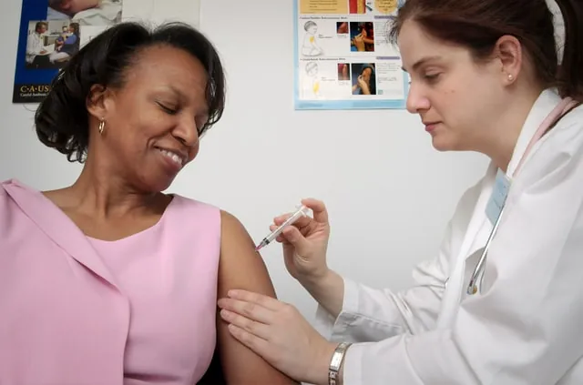

Blog
Articles on mental health, parenting, relationships and well-being from the Healthy Solutions team.
Topics

Signs of Anxiety in Children and How Parents Can HelpHow to tell everyday worry from an anxiety disorder in children, which treatments research supports, and practical ways parents can help at home.Read article

Beyond the Body: Why Prioritizing Mental Health MattersWhy mental health deserves the same care as physical health, how stigma keeps people from seeking help, and common myths about therapy.Read article

How to Manage Anxiety AttacksThe common signs of an anxiety attack and practical steps to calm one, from slowing your breathing to grounding your senses, plus when to get help.Read article

Why a Psychology Professional MattersWhy seeing a psychologist is as ordinary as seeing any other health professional, and what a psychologist does in therapy to help people change.Read article

Teen Groups!A small therapy group for 3 to 5 teens focused on self-esteem, anxiety, depression and relationships, in a safe space where teens can connect.Read article
Staying Healthy Is Up to You!Everyday habits that support both body and mind, from a positive outlook and gratitude to social connection, exercise, sleep and good nutrition.Read article
Mind-Body HealthAn introduction to psychoneuroimmunoendocrinology, the field that studies the mind and body as one unit, and to how stress can affect the body's defenses.Read article

Attention and FocusAttention is the step before memory. Learn what can reduce it and get practical tips, from fewer distractions to breaks and sleep hygiene, to focus better.Read article
What Is Memory?Memory lets us keep and recall facts, ideas and experiences. Here are simple everyday habits, like good sleep, less stress and exercise, that support it.Read article
What Is Cogmed?Cogmed is an online working memory training program that aims to improve attention, school and work performance. See how it works and how long it lasts.Read article

How to Help Your Child Cope With Their Parents' SeparationChildren can feel many mixed emotions when their parents separate. These simple tips can help you support your child through separation or divorce.Read article
Well-Being in the FamilyWhy family matters and four simple areas to work on at home: nutrition, movement, time outdoors with less screen time, and quality time together.Read article

Play Therapy Training with Lisa Saldana (2021)In June and July 2021, therapist Lisa Saldana gave a play therapy training series at HSCF for our team of therapists and the community.Read article
Effective or Assertive CommunicationWhat assertive communication means for a couple and five practical tips, from choosing the right moment to talk to sharing your emotions honestly.Read article
How Can I Improve My Mental Health?Why mental health matters and everyday ways to care for it, from gratitude, sleep and exercise to connection, meditation and relaxation techniques.Read article

Balance and Harmony: Coping with COVID-19 After the VaccineA look at how COVID-19 affected emotional health, what early studies reported about fear, anxiety and depression, and the kinds of support that build resilience.Read article
No articles on that topic yet.
We’re here to help.
Call or write to us and we’ll point you to the right service and professional for you or your family.